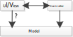

The MVC terminology is still widely used today, especially by web application frameworks, but with different meanings ascribed to "M", "V" and "C". In some approaches it is extended by adding view models (VM) as another layer.
In the original MVC proposal, the "model" consists of model classes implementing the app's data model, while today many MV(VM)(C) frameworks do not include any concept of model classes, but rather refer to data objects (or records) as "models". Also the term "controller" is ambiguous today. In the original MVC proposal, the term "controller" referred to the handling of UI events including user inputs. Today, it typically refers to all the glue code needed for mediating between the model and the view, including the code for routing.
In summary, in today's frameworks, the term "model" vaguely refers to the data sources of an app, while the "view" denotes the app's code for the user interface, which is based on CSS-styled HTML forms and DOM event listeners, and the "controller" typically denotes the (glue) code that is in charge of mediating between the view and the model. There is widespread agreement that
the model should be independent of the view and the controller, implying that the model must neither invoke the view nor the controller (in the model code, there should be no calls of any view or controller procedures);
the controller may invoke both the model and the view;
the view may invoke the controller.
However, as shown in the following diagram, it is not clear if the view may also invoke the model, or if it needs to route any calls of model procedures via the controller. Both approaches are being used in practice. The first approach, where model procedures can be called from the view, is simpler and leads to a leaner controller.
|  |
The second approach, where the view is decoupled from the model by routing all calls to it via the controller, is called the mediating-controller MVC pattern, shown in Figure 6.2. It has the advantage of fewer dependencies and providing better support for model-view synchronization based on data-bindings.
In many MVC web application frameworks, the model is tightly coupled with the underlying data storage technology, often via an object-relational mapping (ORM) approach mapping classes to tables and objects to table rows. This tight coupling makes model classes dependent on a specific database technology or even on corresponding database tables. It therefore violates the onion principle, since the model is the most fundamental part of an app, so it must not depend on any other part.